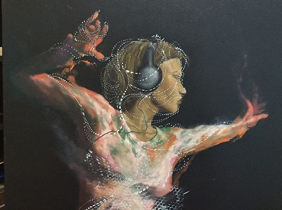
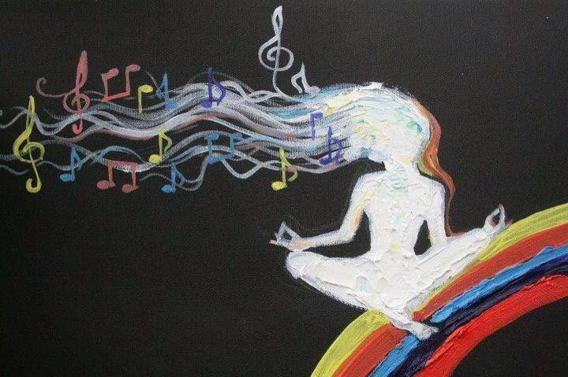
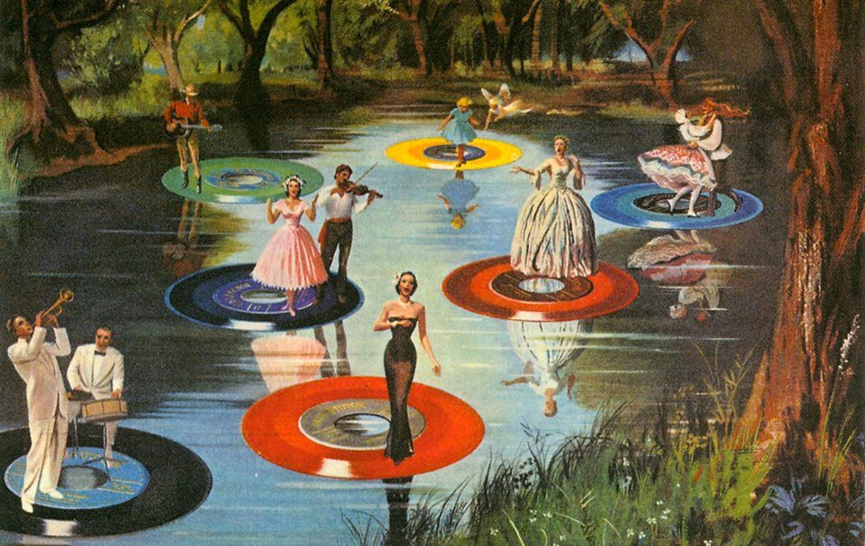
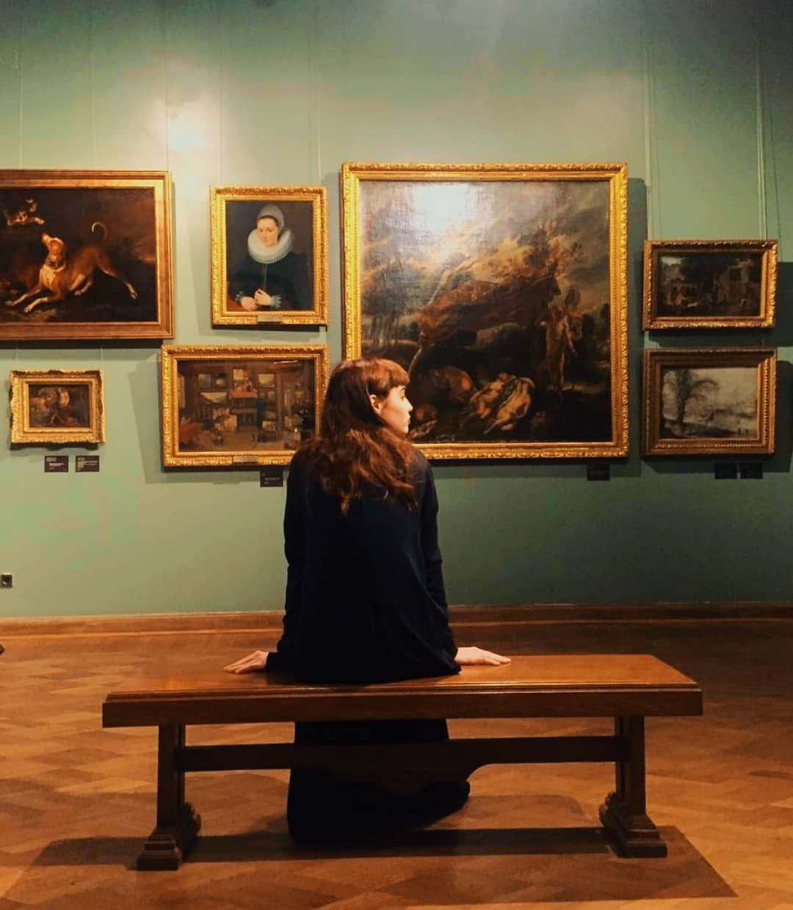
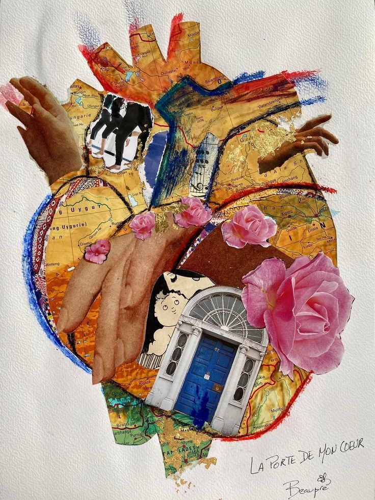
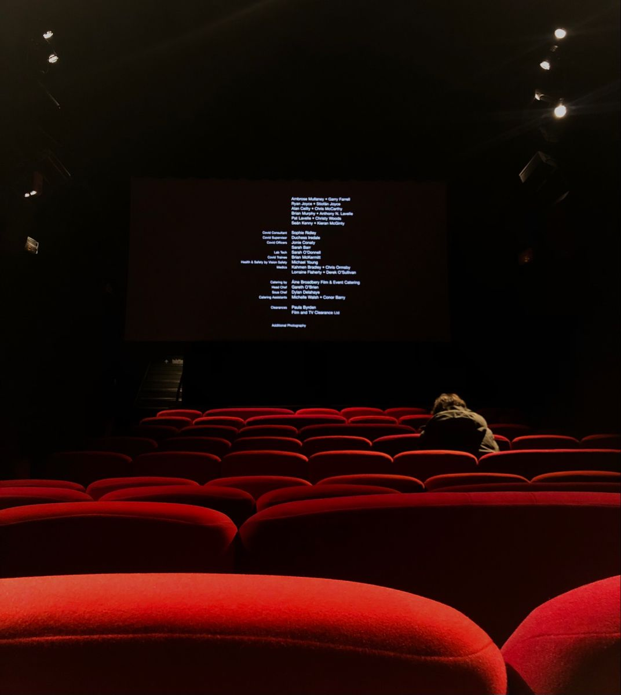

Investigaciones

"La música es un estímulo que fácilmente suele asociarse con experiencias positivas y, por ende, puede regular nuestras emociones. Por medio de estas experiencias significativas, la música es capaz de ‘transportarnos’ a cómo nos sentíamos en esos recuerdos con la cual se asocia, como el concierto de una banda preferida o una fiesta memorable", dice el profesor Quintana Zunino. La música nos sirve, dice el profesor Maldonado, "principalmente para acompañarnos en un ambiente grato. Es decir, la música nos acompaña para hacer otras cosas, nos permite recordar cosas que han tenido cambios positivos en nuestra vida, entre otras. Y también se sabe que la música puede ayudar a recordar ciertas cosas en la medida de que uno la asocia con ciertos eventos”. Asimismo, dice el especialista que en el caso de quienes inician sus estudios en algún instrumento o aprenden sobre música, “tiene impacto positivo porque el aprendizaje de la música requiere adquirir ciertas competencias cognitivas que sirven para aprender otras cosas, de manera que es un tipo de actividad, así como la lectura u otro idioma, nos otorga facultades de aprendizaje para otros ámbitos de la vida".
Por su parte, el profesor Gonzalo Quintana Zunino, dice que la música, tal como otras experiencias, "es una clave que ayuda a nuestro cerebro a establecer recuerdos con eventos significativos. Estos recuerdos anclan las emociones que sentimos en dichas experiencias, volviéndose parte de los recuerdos". E insiste en que "escuchar música se puede convertir en una "máquina del tiempo" de las emociones, las cuales también se retroalimentan de nuevas experiencias, pudiendo consolidarlas o perder su significancia".Sobre escuchar la música que nos gusta y disfrutamos, el profesor Maldonado dice que "obviamente tiende a llevarnos a un ambiente donde nos relajamos y nos produce placer. Esto no es privativo de la música, la actividad física es muy importante y hay mucha evidencia neurofisiológica que muestra que el ejercicio provee bienestar tanto del cuerpo, pero también hacia el cerebro". Y, finaliza diciendo Quintana Zunino que, "la música preferida activa las áreas del cerebro asociadas con el placer y la euforia, así como también con la corteza somatosensorial, aquella asociada con el cuerpo y el movimiento. No por nada nos gusta movernos al ritmo de la música".
Quintana Zunino / Pedro Maldonado. Fuentes: Universidad de Chile

Los estudios de la OMS indican que escuchar música, bailar, ir al teatro o a un museo pueden tener beneficios duraderos para la salud emocional, además de generar impactos positivos en la autoestima.
El arte siempre ha estado presente en la vida humana. Desde los primeros hombres de las cavernas, la expresión artística ha crecido y se ha desarrollado paralelamente a las sociedades y desempeña un papel fundamental en diversos aspectos de la vida, incluida la salud. Según la Organización Mundial de la Salud (OMS), las artes son adecuadas para ayudar a comprender y comunicar conceptos y emociones, estimulando todos los sentidos e incluso la capacidad de empatía. Lo que, según el organismo mundial, es especialmente beneficioso para la salud mental.
Las investigaciones realizadas por la oficina regional para Europa de la OMS han demostrado que el uso de medios artísticos en la atención sanitaria puede tener diversos beneficios. Según un informe publicado en 2019 en el que se analizan los resultados de más de 3000 estudios, las artes desempeñan un papel importante en la prevención de problemas de salud, la promoción de la salud como un todo humano y la gestión y el tratamiento de enfermedades a lo largo de la vida. Por ejemplo, los estudios de intervenciones artísticas específicas, que incluían canto, percusión en grupo, magia, danza, fotografía diaria y visitas a instituciones culturales, mostraron efectos positivos en todo tipo de bienestar individual y social. Entre algunos de los beneficios comunicados se encontraban mejoras en la vitalidad, el rejuvenecimiento, la resiliencia, el propósito y la calidad de vida. El informe de la OMS también afirma que actividades como hacer y escuchar música, bailar, las bellas artes y visitar lugares culturales se asocian a la gestión y prevención del estrés y reducen los niveles de ansiedad. Además, la participación en las artes también puede ayudar a reducir el riesgo de desarrollar trastornos mentales como la depresión, tanto en la adolescencia como en la vejez. "La participación en actividades artísticas puede aumentar la autoestima, la autoaceptación y la confianza en uno mismo, lo que ayuda a proteger contra los trastornos mentales. Por ejemplo, los niños y adolescentes que participan en actividades artísticas tienen mejores niveles de bienestar, socialización y resiliencia", afirma el documento de la OMS.
Fuentes: National Geographic
Cuando hacemos arte, como dibujar, pintar, tocar música, escribir o bailar, nuestro cerebro se pone en acción de una manera increíble. Los científicos han descubierto que hacer arte activa partes del cerebro que ayudan a mejorar nuestro bienestar emocional y mental. Cuando estamos tristes o estresados, el arte puede ser como una especie de terapia para nuestro cerebro. Hacer arte libera sustancias químicas en nuestro cerebro, como la dopamina y la serotonina. Estas sustancias químicas hacen que nos sintamos mejor, más relajados y menos estresados. El arte también puede ayudarnos a expresar nuestras emociones. A veces, es difícil decir lo que sentimos con palabras, pero a través del arte podemos contar mejor lo que nos pasa. Esto puede ser muy liberador y ayudarnos a sentirnos mejor. Además, cuando practicamos arte, mejoramos nuestras habilidades cognitivas, como la concentración y la memoria. También estimulamos la creatividad y la imaginación, lo que nos ayuda a pensar de manera más creativa en otros aspectos de la vida.
Fuentes: CONICET


¿Qué sentimos al observar una obra de arte? ¿Qué emociones despiertan el color, la composición o la mirada de un retrato? Aunque la experiencia del arte es profundamente subjetiva, nuestras reacciones pueden medirse y analizarse.
Ir
La arteterapia es una psicoterapia especializada que combina expresión creativa con acompañamiento profesional para reducir el estrés, disminuir la ansiedad y mejorar el bienestar emocional mediante técnicas artísticas como pintura, dibujo y modelado.
Ir
A muchos de nosotros nos gusta lo que sentimos cuando nos sentamos a ver una buena película. Si es triste puede ayudarnos a liberar emociones, mientras que una comedia puede levantarnos el ánimo. Incluso pueden ofrecernos la oportunidad de conectar con nuestras emociones y explorarlas de forma segura.
Ir